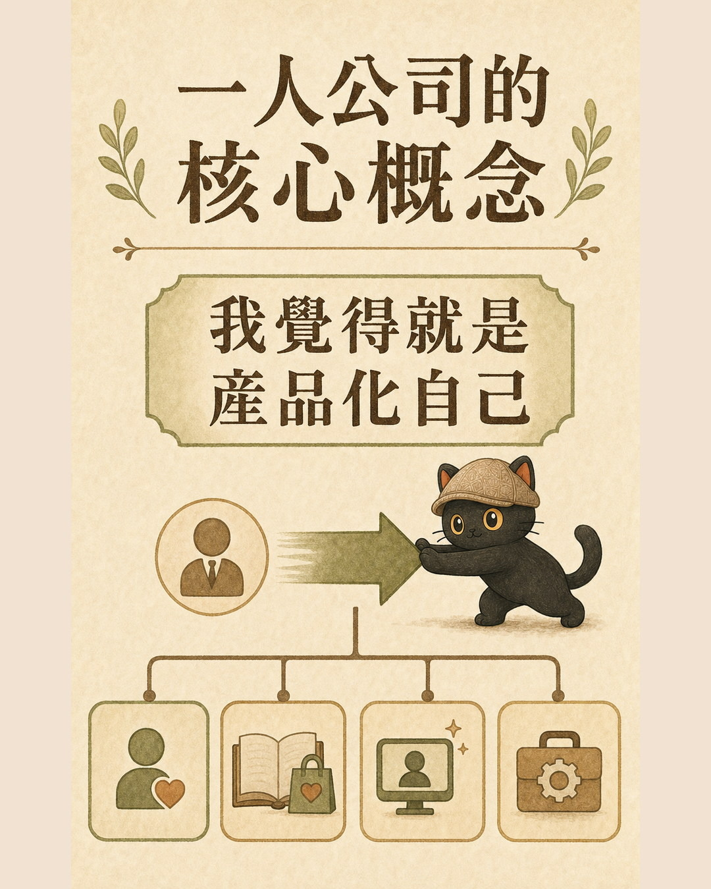
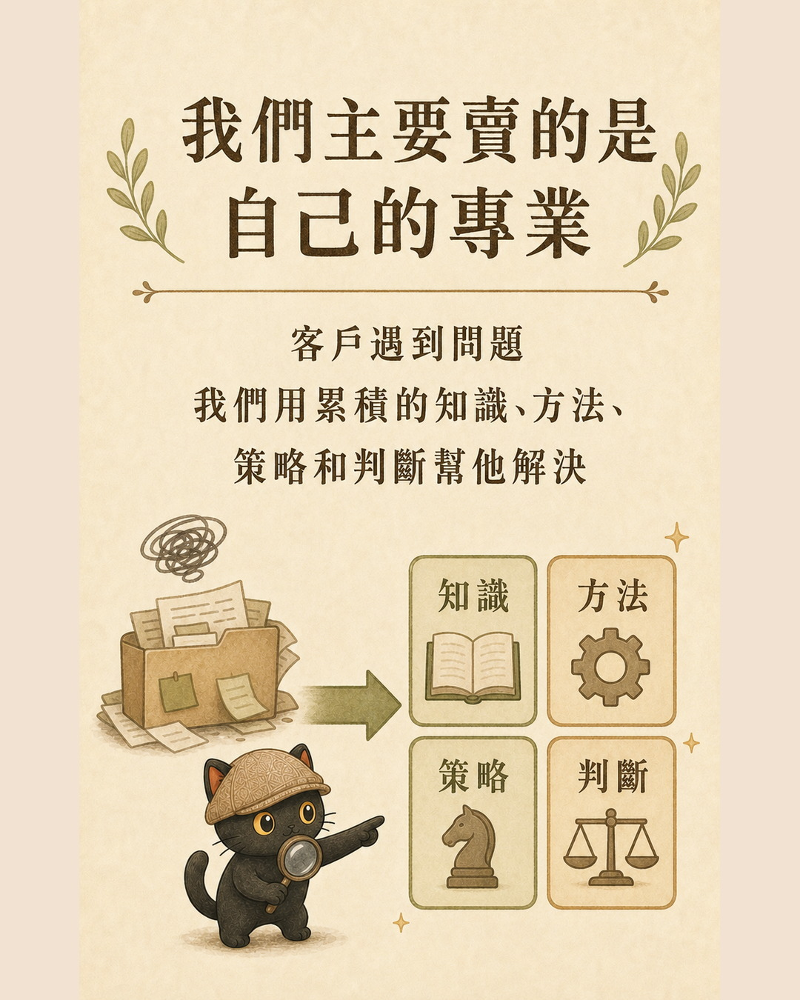
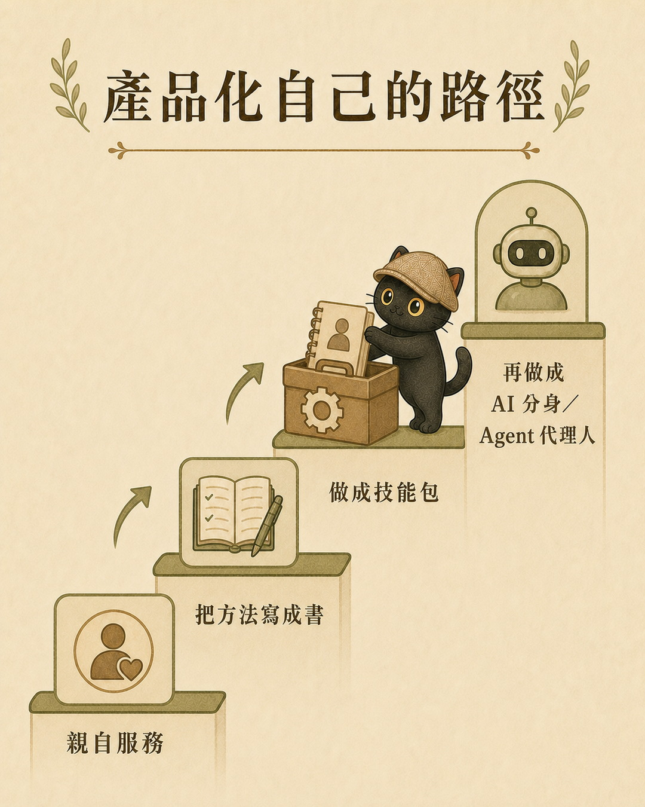
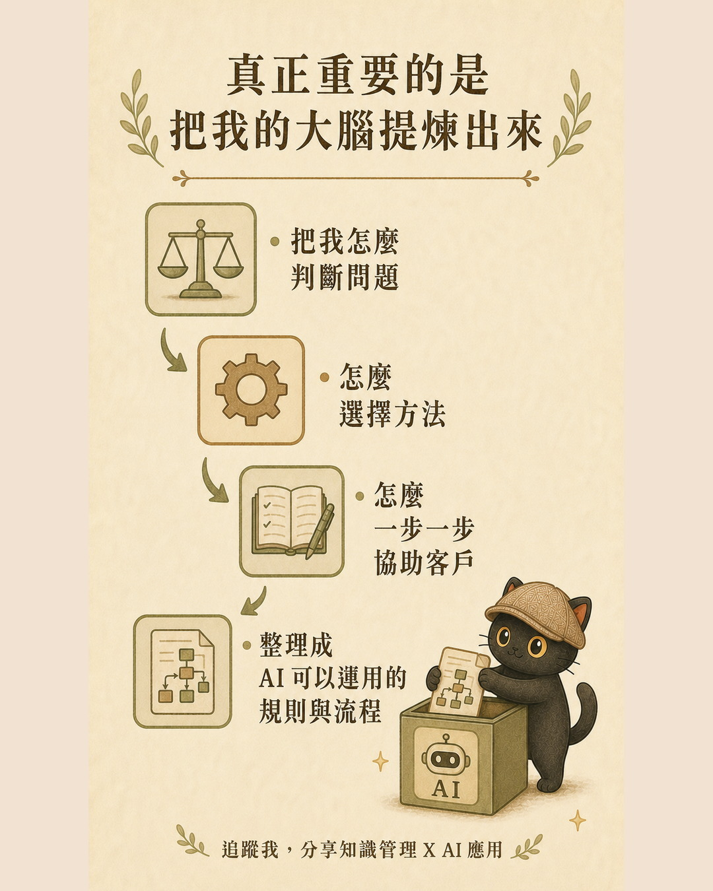
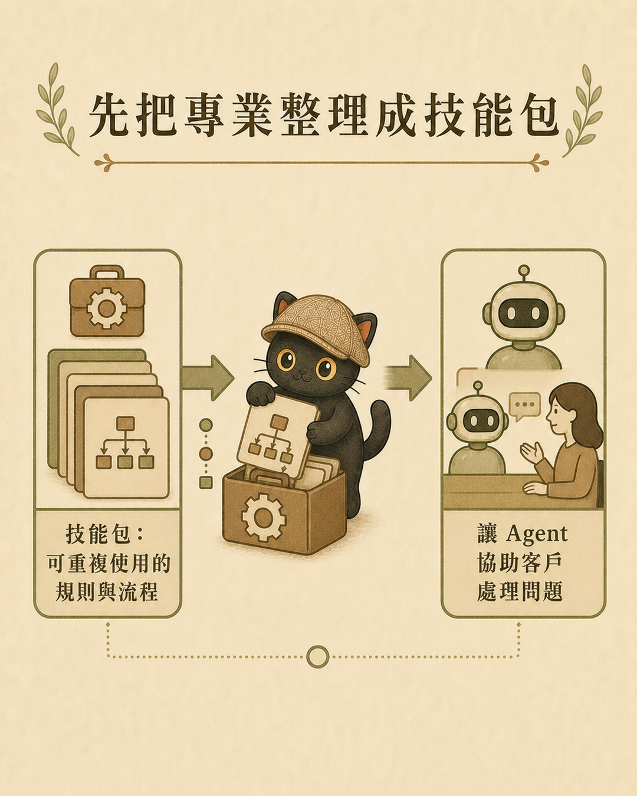

這篇在講什麼
個人工作室和一人公司看起來都可能只有一個人。我覺得真正的差別不在人數，而在兩件事：收入主要靠自己的時間與體力，還是已經把自己產品化；這套事業主要回應市場、消費者與股東，還是主要為了實現創辦人自己的想法。

- 已經成立個人工作室，收入仍然主要來自自己接案
- 想把專業做成可以重複銷售的產品或服務
- 想用數位分身與技能包產品化自己
- 判斷收入是否仍然和個人工作時間綁在一起
- 把專業做成書、影片、AI 分身或技能包的五步方法
- 三套可以直接使用的技能包與 AI 顧問
兩種模式，差別在收入怎麼產生
用自己的時間、體力與專業完成一件件工作。做一份工作，收一份錢。工作暫停，收入通常也會跟著減少。
先花時間打造商業模式、產品或服務，再讓這套系統重複銷售與交付。收入不再完全按照每一小時的個人工作計算。
用老師的工作來看
老師一小時收兩千元做家教，或接受單位邀請去上一堂課，主要賣的是當下的教學服務。即使教材可以重複使用，真正的交付仍然需要老師本人出現在現場。
同一位老師也可以把教學內容做成線上課程。拍好影片、設計好購買流程之後，不同時間進來的學員都可以自行付費學習，同一套內容也能同時服務更多人。
一人公司：先建立產品或系統 × 重複銷售與交付
一人公司的核心：產品化自己
我們真正拿來服務客戶的，通常是自己的專業。客戶遇到問題，我們運用累積的知識、方法、策略與判斷，幫他找到解法。
最直接的方式，是我親自花時間替客戶解決問題。接著，我也可以把自己的方法與策略寫成書，或拍成教學影片，讓客戶透過閱讀與學習運用我的方法。

我本人運用專業，直接替客戶解決問題。
把方法教給客戶，讓他理解並學會使用。
把判斷與流程交給 AI，陪客戶實際執行。

這裡所說的 AI 分身，重點是把自己的大腦提煉出來：把怎麼判斷問題、怎麼選擇方法、怎麼一步一步協助客戶的專業經驗，整理成 AI 可以運用的規則與流程。
書和影片主要讓客戶學會你的方法。AI 分身與技能包，則進一步讓這套方法陪著客戶執行。我們產品化的內容包含專業判斷與解決問題的流程。

產品化自己，可以怎麼開始？
依照前面的邏輯，我會整理成五個步驟。
回看客戶常帶著什麼問題找你，挑出你真的解決過、而且會反覆出現的問題。
寫下先問什麼、看哪些資料、怎麼判斷、用了哪些方法、最後交付什麼。
整理什麼情況用哪種方法、何時換方向、哪些錯誤要避開、怎樣才算完成。
依客戶需要理解、學習或直接執行，選擇書、影片、技能包或 AI 分身。
測試產品能否理解情境、選擇方法並交付有用結果，再把缺少的判斷寫回去。

三個可以直接開始的入口
把自己的文章、講課逐字稿、想法與決策案例，整理成有來源、有邊界，也能持續驗證的 AI 顧問。
查看技能包 ↗用來討論自己的專屬知識是什麼、哪些能力值得產品化，以及如何運用媒體與程式碼槓桿。
在官網查看納瓦爾數位分身 →更核心的對比：這套事業服務誰
一般人開公司，主要會服務市場、消費者與股東。公司先看市場缺少什麼、消費者願意購買什麼、股東期待公司怎麼成長，再決定要做哪些產品與服務。
市場需要什麼 → 消費者願意買什麼 → 公司提供什麼
我想解決什麼問題或實現什麼想法 → 我可以做出什麼產品與服務 → 哪些人也需要這套東西
這裡所說的「圍繞自己」，不代表完全不理市場。產品要能賣出去，仍然需要有人願意購買。差別在於這間公司最初為了誰而生，以及最後想完成誰的想法。
馬斯克是我心中的極端例子
按照這個定義，我會把馬斯克視為一人公司的極端案例。
他的公司規模很大，有股東、客戶與大量員工，組織形式當然不是一般所說的一人公司。可是從創辦人的想法來看，他的產品、技術與商業模式，都圍繞著他長期想實現的火星與太空計畫。
一間公司可以有很大的規模，同時仍然帶有非常強烈的創辦人方向。公司服務市場、消費者與股東，也承載創辦人自己想完成的計畫。
用來檢查你的目標、事實、假設、硬限制，以及可以先做哪一個最小驗證。
在官網使用第一性原理顧問 →最後，用兩句話說清楚
個人工作室（個人接案），是用自己的時間與專業完成一件件工作。
一人公司，是把自己的專業與想法產品化，做成一套可以反覆運作的商業系統，而且這套系統主要為了實現自己真正想完成的事情。
先找出一個你反覆替客戶解決的問題，再把真實做法與專業判斷記錄下來。這就是產品化自己的起點。
開始提煉自己的 AI 顧問 ↗